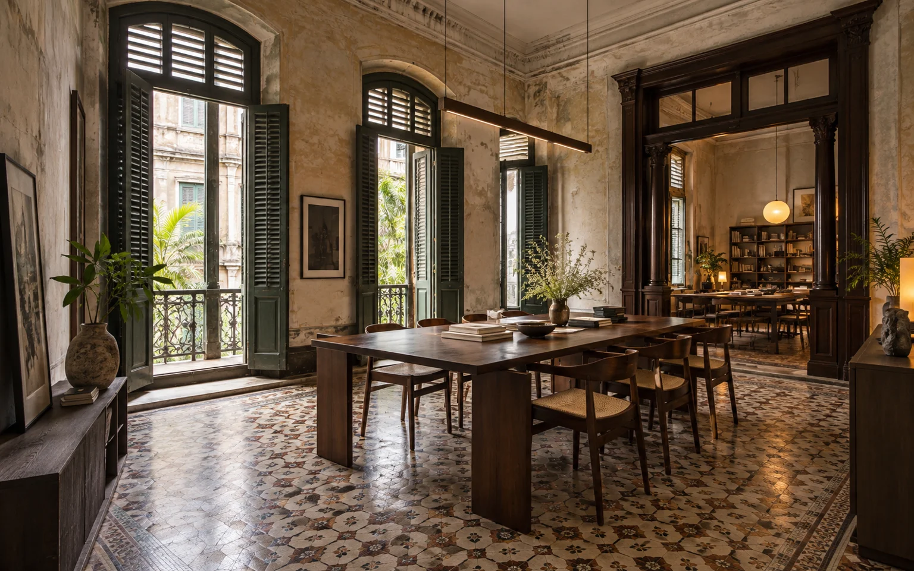

Coastal home / Concept study
Coastal home / Concept studyIndex / 01–05
Five studies.
Different ways to live.
Homes, interiors and a small retreat. These are imagined briefs, not completed commissions.
5 studies
Coastal home / Concept study Urban home / Concept study
Urban home / Concept study Small guest retreat / Concept study
Small guest retreat / Concept study Apartment interior / Concept study
Apartment interior / Concept study
Reuse study / Concept studyFrom looking to talking
Have a website
in mind?
FORMA is a concept. NEVQUO is where you can discuss a real design or development project.
Contact NEVQUO